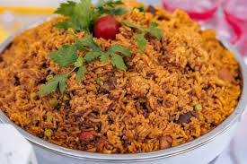

How To Make Jollof Rice

Descriprion
Jollof Rice is made using natural and flavourful ingredients
These natural ingredients give this dish a very unique flavor
Ingredients
- Tomatoes
- Red Bell Peppers
- Onions
- Rice
- Tomato Paste
- Seasonings
Steps
- Blend together the tomatoes, bell peppers, and onions
- Diced some onions and heat up your prefered oil
- Let Onions fry for 2 minutes on low heat
- Add the blended pepper mix to the fried onions
- Throughly wash the rice while the pepper sauce is cooking
- Add the washed rice to the pepper mix and cook on low heat for 45 minutes
- Add your preferred seasoning
- Enjoy when done